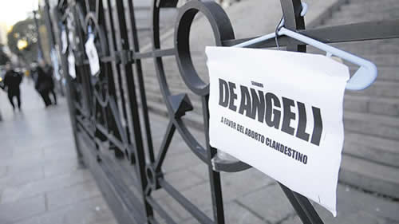

Real Chubut - Agencia de Noticias


El Gobierno aborta el Código para no discutir el aborto

El Poder Ejecutivo suspendió la presentación del anteproyecto del Código Penal a raíz de la interna en el oficialismo por la IVE.
El anteproyecto mantiene la penalización de las mujeres. Hubo críticas y nuevas propuestas. Pero por ahora queda en suspenso.
El presidente Mauricio Macri volvió a tropezar con las diferencias políticas en el seno de Cambiemos respecto de la legalización del aborto y los costos sociales de avanzar contra los derechos de las mujeres, por lo que decidió suspender sin nuevo aviso el acto del martes próximo en el CCK para presentar el anteproyecto de la reforma del Código Penal que, tal como fue redactado por la Comisión de Reforma encabezada por el juez Mariano Borinsky, mantiene la penalización sobre las mujeres que se practiquen abortos. A una semana del rechazo de la legalización en el Senado, otra mujer murió por las consecuencias de la clandestinidad y ya suman dos los casos conocidos (ver aparte).
El Gobierno intentó despegarse del rechazo que el aborto seguro, legal y gratuito obtuvo en la Cámara alta, con votos mayoritarios de la alianza gobernante, por lo que, al día siguiente de la sesión, el jefe de Gabinete, Marcos Peña, destacó las modificaciones que incorpora el proyecto de reforma del Código Penal. Sin embargo, los sectores oficialistas que respaldaron los reclamos del movimiento feminista se oponen al anteproyecto y exigen la despenalización.
“Modificar el anteproyecto es una decisión política”, sostienen desde el sector que respaldó la ley de Interrupción Voluntaria del Embarazo. Mientras que Soledad Deza, abogada del caso Belén en Tucumán, explicó que el anteproyecto no significa “ningún avance” en tanto no se incorpore la interrupción del embarazo hasta las 14 semanas como causal de aborto no punible. “El mensaje estigmatizante y la amenaza penal se mantienen”, apunta.
El artículo en debate hacia el interior del Gobierno es el 88 del anteproyecto redactado por la Comisión de Reforma presidida por Borinsky. En ese apartado, la comisión redactora propone reducir un año la escala penal establecida un siglo atrás. Si el Poder Ejecutivo presentara el articulado tal como quedó redactado, las mujeres que se practicaran un aborto de manera clandestina podrían ser condenas de 1 a 3 años, a diferencia del actual sanción de 1 a 4 años.
Esa modificación transforma la pena en excarcelable, permite dejarla en suspenso o eximir de pena a la mujer, según el criterio del juez. “No hay que minimizar el hecho de que es la única eximición de pena en todo el Código penal”, destacó Borinsky la semana pasada al defender el anteproyecto, que incluso incorpora la figura de “persona por nacer”.
“Sigue manteniendo la penalización de la mujer”, sintetizaron a PáginaI12 desde el sector de Cambiemos que rechaza mantener en el Código la condena contra la mujer e indicaron que por estas horas el debate que se da en la Casa Rosada es sobre la contrapropuesta para modificar el anteproyecto e incorporar la despenalización. Según explicaron desde ese sector a este diario, la contrapropuesta va desde eliminar el artículo 88 –que describe el monto de la pena– o precisar su alcance a “la despenalización hasta la semana 14 de gestación”.
Deza coincide con que el anteproyecto no significa “ningún avance”, ya que “reduce la pena y la da al juez la facultad de discrecionalidad de no aplicarla”, pero “mantiene la penalización y no amplía en ninguna forma las causales no punibles”, lo que deja intacto “el mensaje estigamtizante y la amenaza penal sobre la mujer”. Además, respecto del “criterio del juez”, la abogada del caso Belén recordó que sólo en Tucumán, entre 1992 y 2012, se abrieron 534 causas por abortos. “El proceso penal en sí mismo es una condena”, advirtió.
La abogada e integrante de Católicas por el Derecho a Decidir recalcó que la reducción de la pena en el artículo 88 no trae cambios y agregó que incluso la eliminación de ese artículo podría no tener impacto efectivo en caso de que “en el artículo 86 no se agregue como causal no punible la interrupción del embarazo hasta el tercer trimestre de gestación”. ¿Por qué? “Porque ¿qué médico realizaría la práctica sí sigue siendo punible?”.
Al defender las modificaciones incorporadas, Borinsky se detuvo en una modificación incorporada precisamente en el artículo 86, donde se especifica la no punibilidad de la práctica en casos donde haya peligro para la vida o la salud de la mujer o en casos de violación. Según el titular de la comisión de reforma, se incorporó el estándar de la Organización Mundial de la Salud, que amplía la causal de salud tanto “física como mental”.
Deza explicó a este diario que los estándares de la OMS –incorporados en el protocolo para abortos no punibles del Ministerio de Salud desde 2015– hablan de “estado de completo bienestar”, lo que incluye también el aspecto social de la mujer. Sin mencionar la consideración por parte de la OMS de la necesidad de descriminalizar el aborto para abordarlo con una problemática de salud pública.
“El Presidente tiene la facultad de modificar el anteproyecto que le envió la comisión redactora. La comisión eleva su propuesta y luego es una decisión política modificarla o no”, interpelan desde el sector de Cambiemos a favor de legalizar el aborto y advierten: “Quienes se oponen son los mismos actores que metieron presión durante el debate”. El propio presidente se manifestó “a favor de la vida”, mientras que el jefe de Gabinete aseguró estar “en contra de la despenalización”, sin embargo las masivas movilizaciones de mujeres parecen haber calado en la grieta de la alianza de Gobierno.
Por el momento, el desacuerdo en la coalición gobernante dejó sin fecha la presentación que estaba agendada para el martes próximo en el CCK. Una nueva fecha de presentación aún es incierta, desde algunos sectores indican que la decisión podría llegar en días o semanas, otros señalan que podría dejarse para diciembre.
Fuente: Pagina12